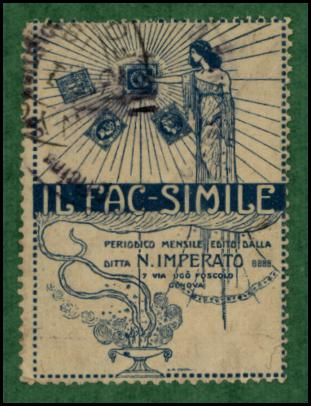
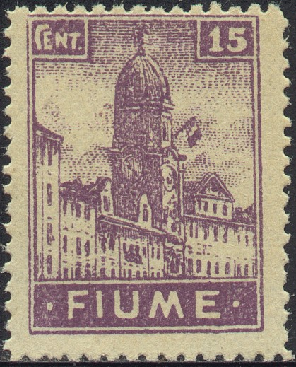
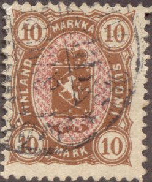
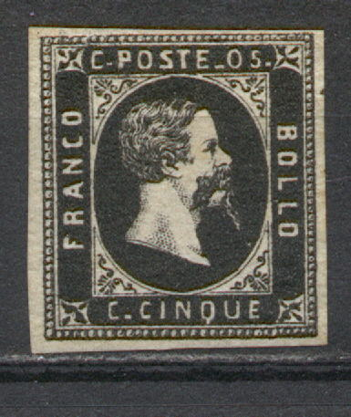
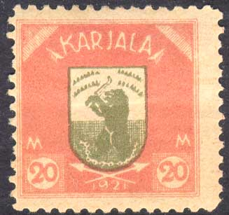
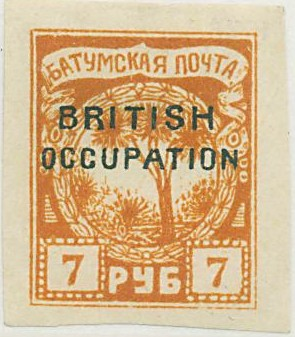
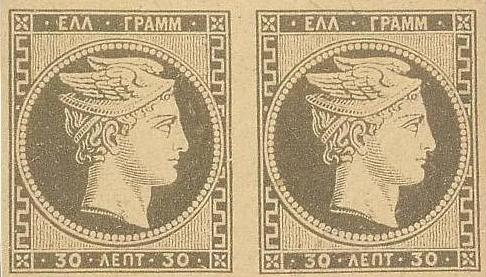
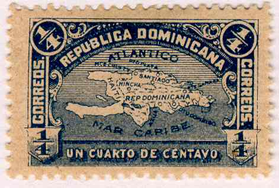
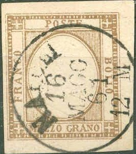

Note: on my website many of the
pictures can not be seen! They are of course present in the
catalogue;
contact me if you want to purchase the catalogue.
Nino Imperato was one of the Italian stamp forgers around 1920. His address was 7 Via Ugo Foscolo in Genoa (Genova). I don't have much information on him right now, if you possess more information, or images of his forgeries, please contact me. See also: http://en.wikipedia.org/wiki/N._Imperato. Imperato also offered forgeries made by Erasmo Oneglia.
Here a label used to advertise his journal 'IL FAC-SIMILE'. The text reads "PERIODICO MENSILE EDITO DALLA DITTA N.IMPERATO 7 VIA UGO FOSCOLO GENOVA":

Imparato published his journal 'Il Fac-Simile' from May 1920 to May 1922 (http://apslive.linkstaging.com/userfiles/file/library/World_Philatelic_Periodicals/pag073.htm).
Imperato made forgeries of the 1896 Honduras (President Arias) issue. All 8 values were forged by him.
He probably also forged the 1898 issue of Honduras (train set).
Imperato forgery of Fiume:

(Forged stamp of 15 c, the house has four windows, product of
Imperato?)
(Genuine stamps only have three windows in the house)
Forgeries of the 1896 Jubilee issue of Ecuador, probably made by
Imperato.

These forgeries of Finland with 'MARKKA' instead of 'MARKKAA'
were made by a forger I. in Genoa according to the Serrane guide.
This forger was most likely Imperato. He also made a forgery of
the 1 M value.

Imperato forgeries of the first issue of Sardinia.


Batum Imperato forgeries of the 10 k with 7 pearls above the
lower right value tablet. Also note that the branches of the tree
are different and that there is a white ellipse in the central
design (some distance above the 'K' of 'KOP' just inside the
central circular design). Next to it a 7 R stamp with the same
white ellipse. Note that the 'A' and 'T' of 'OCCUPATION' are not
very close together.
Zoom-in of the white ellipse (in the middle of the image). In
'Philatelic Forgers, their Lives and Works' by V.A.Tyler, such a
forgery is shown and said to have been sold by Imperato.

Forgeries of the first issue of Greece.

Dominican Republic 1900 issue. This Imperato forgery has no dot
behind "ATLANTICO" (genuine stamps have such a dot).
Other forgeries that he made:
Italian occupation of Austria (Venezia-Giulia and
Venezia-Tridentina overprints)
Brazil (1850? issue)
Eritrea: 1893 forged overprints on genuine stamps of Italy
Italian post in Turkey: 1908 forged overprints on genuine stamps
of Italy
Spain 1905 issue (Cervantes issue)
Neapolitan Provinces of 1861
Another list appears in Le Postillon Revenue
Philatelique of June 1920, page 405:
Venezia Guilia: 1 c to 1 L (forged overprints on used Italian
stamps); price 3 Francs
Venezia Tridentina: 1 c to 1 L (forged overprints on used Italian
stamps); price 3 Francs
Tientsin and Pechino, Italian offices, 1 c to 1 L on forged
overprint used Italian stamps; 2 Francs per set
German Offices in Turkey: 3 stamps, price 2 Francs
Two Sicilies, 1861, 1/2 Tornese to 50 Grana, unused, also with
inverted centers; price 3 Francs
Spain 1905 Cervantes (Don Quichote) 10 Pesetas, with "MADRID
15 MAY 1905" cancel, price 1.25 Francs.
Egypt, postage due stamps, 4 values, unused,

Possibly Imperato forgerie of the Neapolitan Provinces, many of
them have the cancel "NAPOLI 16 MAGG 61 12 M" or
"NAPOLI 19 MAGG 61 12 M".
{kind=link}
{kind=link}
{kind=link}
{kind=link}
{kind=link}
{kind=link}
{kind=link}
{kind=link}
{kind=link}
{kind=link}
{kind=link}
{kind=link}
{kind=link}
{kind=link}
{kind=link}
{kind=link}
{kind=link}
{kind=link}
{kind=link}
{kind=link}
{kind=link}
{kind=link}
{kind=link}
{kind=link}
{kind=link}
{kind=link}